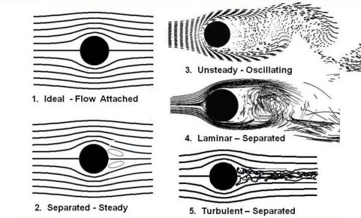

This website explores the fascinating parallels between water drag in swimming and wind drag in aerospace. Learn how principles from aerospace engineering have revolutionized swimming performance and discover the science behind drag reduction.
Image source
NASA